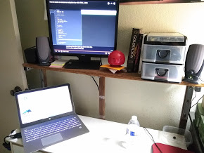

Well you've come to the right place, I like computers, as was pretty obvious, as well as learning, building, and all kinds of other weird things.
I have expience building and repurposing old computers just as a good hacker should, but I'm also dabbling in messing about with some newer hardware :)
So this is my desk, where I live and breathe daily as I work incessantly to catch up to all the homework assignments I've decided to procastinate on, so thats all well and good, I finally decided to order things up, and given the condition of everything I own, that is a massive achievment in itself.
I'm feeling passionate tonight so I feel as though I should give a nice full descrition of my hacking career, totally not because I'm procastinating other classes because this is my favorite. So here I go!
Well first off, I should probably start from the very very beginning, which was figuring out html when I was a young lad (roughly 12 years old I believe) all because of a certain tyranical school district insituting a district wide block on the beloved "Cool-Math-Games". This infuriated me, and as I grew up having fun messing with basic modifications to a websites html, I thought, what if I ran flash games offline??
A total shocker, I know.
The very epitome of a middle school hacker
Anyway after viewing the source of several diffrent flash game sites, I kind of reverse engineered how to code in HTML, and figured out was "SWF" files were, and thats where I belive where my love for coding really began
I should probably make the picture relevant now, shouldn't I?
Ok so, this was my first computer I could call my own
A flimsy RCA Cambio, a more than modest intel atom, a literal phone CPU, the same one in the thirty dollar android tablet I picked up a year later to fool around with linux on
Needless to say, it was bad... More than bad, Chrome would kill the poor thing, anything that required a GPU was borderline unthinkable, frequently crashing from an overheating bug if I so much as thought of running a game, but I endured with it anyway, I think I should mention it wasn't even a laptop, it's quite literatlly a tablet with a keyboard running windows with a single USB port and a humble 32gb of storage. So that's still a struggle no matter how much I compress or offload. But all these restrictions taught me so much about computers. I knew how to work with limits, to overclock (especially underclocking), general hacking knowledge from several modifications I made to games in order to make 2006 games playable, and most of all what I value most, patience.
Over the years since the dark times I had struggled through with that excuse for a computer, I had moved on to more powerful hardware, most of it donated by several teachers and administrators at school actually.
(To Mrs. Jamieson, Roberto, and of course Mrs. Garton, I love you guys, thanks for helping me become such a good Coding boyo <3)